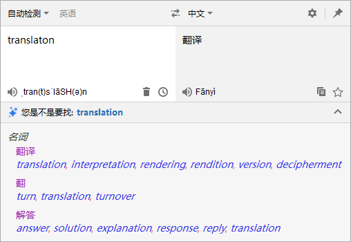
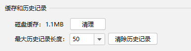
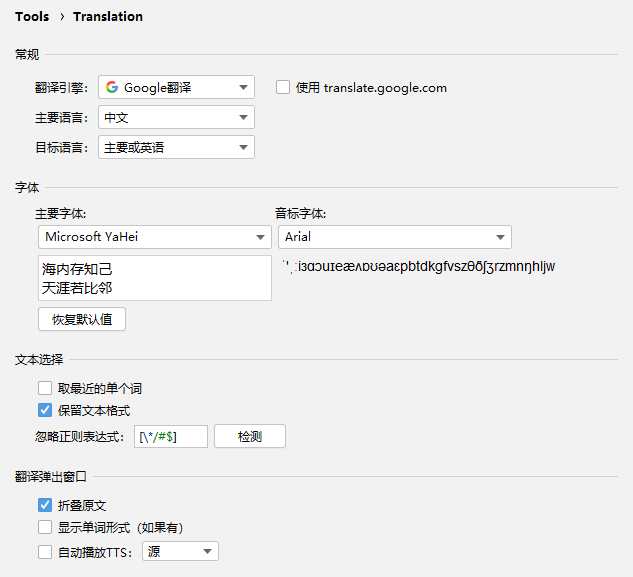

欢迎使用Translation v3.0，此版本中包含了以下主要更新：
- 新的用户界面 - 全新的翻译对话框和设置页UI
- 更多更全的键盘快捷键 - 鼠标？那是什么？
- 磁盘缓存 - 现已支持磁盘缓存
如果您想在线阅读此发行说明，请访问这里。
翻译
翻译对话框
重新设计了翻译对话框的用户界面（#568），使得翻译对话框更加简洁易用。

键盘快捷键
我们在翻译对话框、翻译弹出窗口等界面上添加了很多实用的快捷键，现在您可以使用键盘进行绝大部分的操作了，快捷键详情见 Actions。
Quick Documentation翻译
对于内容长度超出翻译限制的文档，翻译将会被跳过，并给出提示：

磁盘缓存
现在，翻译的结果将会被缓存到磁盘中，下一次相同的翻译将直接从缓存中读取。当然，您可以在设置页中将缓存清理掉：

设置页
我们对设置页的用户界面进行了重新布局（#576），它现在更符合IDEA的UI风格了。另外，设置页现已经被移到 Settings > Tools 分组中。噢，不必担心你会找不到它，我们已经在翻译对话框显眼的位置放置了一个入口，您可以从那里快速打开设置页。

其他不那么重要的改进
聪明的，想必你早已发现了，是吧？